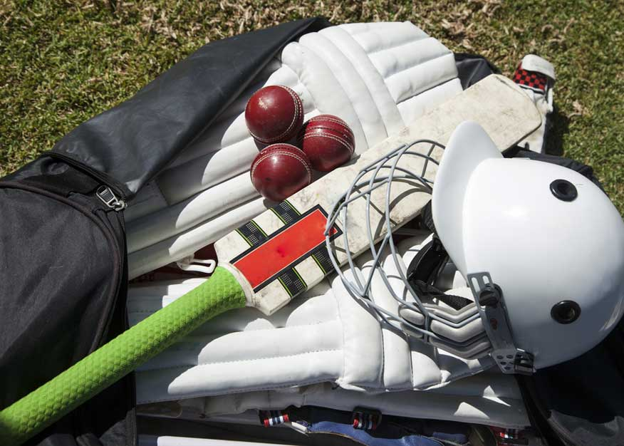
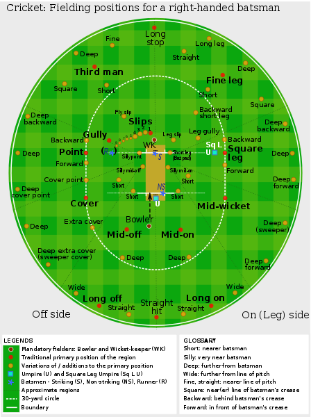

Rules of cricket

Cricket is played between two teams each made up of eleven players. (Sometime in junior competitions you will find 8 player teams).
Games comprise of at least one innings where each team will take turns in batting and fielding/bowling.
The fielding team will have a bowler bowl the ball to the batsman who tries to hit the ball with their bat.
The fielding team tries to get the batsmen out by…
- Hitting the wickets with the ball when bowling
- Catching a batsman’s shot on the full
- Hitting the batsman’s leg in front of the wicket (LBW)
- Or hitting the wickets before the batsmen can run to the other end of the pitch
The batmen try to score as many runs as possible before getting out by…
Hitting the ball and running between the wickets and making it to the other end before the fielders can hit the wickets with the ball. Each time you run one full length of the pitch it equals 1 run.
Hitting the ball to the boundary along the ground is 4 runs.
Hitting the ball over the boundary on the full equals 6 runs.
The fielding team must get 10 batsmen out before they can change over and start batting.
The aim of the game is to score as many runs as possible before the fielding team takes 10 wickets. The team with the most runs wins.
Basic Cricket Skills and Exercises
When your child starts to play sport it always helps them enjoy it more if they have a basic level of skill and understanding of the game. They will be able to participate more, have more confidence and this will stay motivated to keep playing and being active. To be a good cricket player requires:
Good hand eye co-ordination
The ability to throw and catch a ball
Good batting and bowling technique
The ability to concentrate for sometimes long periods of time
